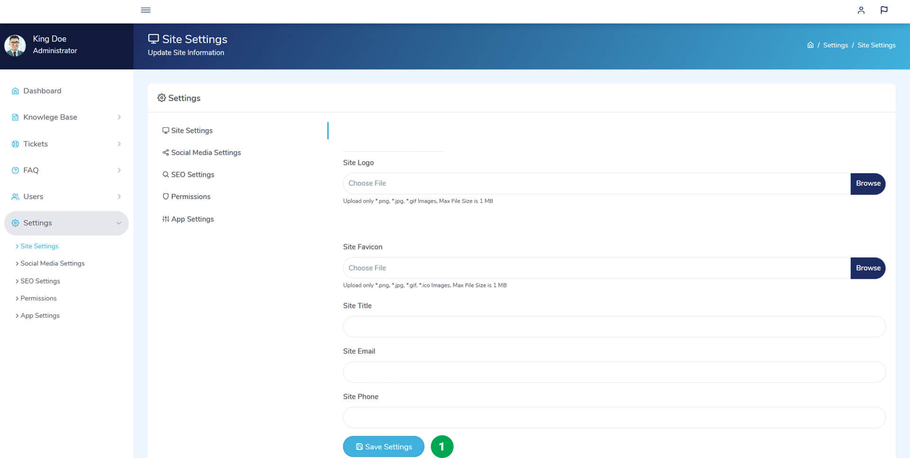
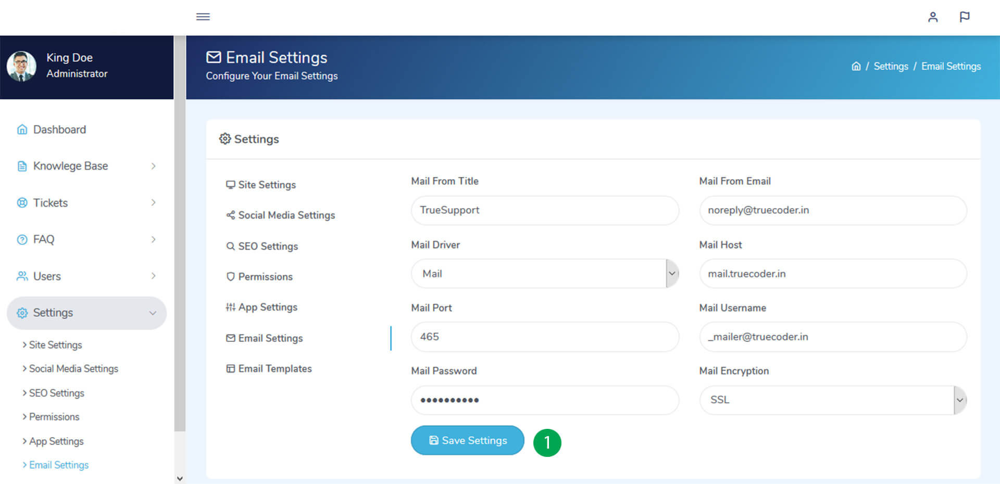

Introduction
- Item Name : Quicksupport - Support Tickets System & Knowledge Base
- Item Version : v 3.0
- Support : myquick@yahoo.com
First of all, Thank you so much for purchasing this script and for being my loyal customer.
You are awesome!
You are entitled to get free lifetime updates to this product + exceptional support from
the author directly.
This documentation is to help you regarding the usage and customization of script. Please go through the documentation carefully to understand how it works. If you have any questions that are beyond the scope of this documentation, please feel free to contact us on myquick@yahoo.com
System Requirements
To installing Quicksupport - Support Tickets System & Knowledge Base, Your web server must be running PHP 5.6 or higher, and Mysql 5 or higher. Below are a list of items you should ensure your host can comply with.
- PHP 7
- PHP 5.6+
- MYSQLi 5.1+
- MYSQLi Extension
- CURL Extension (recommended)
In most hosting accounts these extensions are enabled by default. But you should check with your hosting provider.
Getting Started
Quicksupport, the online support ticket system, Exclusively made for Support Tickets and Knowledge Bases. Using this application user can register to portal and make support request for their tickets. This application also provide facility to search articles and FAQs that added by admin, Which will help your clients to know more about your product or services.
Technology
- Codeigniter Version 3.1.10
- Bootstrap Version 4.1.3
- HTML5/ CSS3
- Jquery/ AJAX
Application Features
- Fully AJAX Based System.
- User-friendly Interface and Interaction.
- Multilingual Support.
- Well Documented.
- Users can register account and submit tickets.
- Users can access knowledge base and FAQs.
- User Dashboard and User Profile.
- Guest Ticket Submission without login.
- Article Voting.
- Admin Can Manage Articles and Categories.
- Admin Can Manage FAQs and Categories.
- Admin Can Manage Tickets and Categories.
- Assign Tickets to Support Agents.
- Admin can Manage Users.
- Role Based Permission and User Based Permissions.
- Site Settings, SEO Settings, Social Media Settings and more.
Installation
Here are the steps you have to take care of installing Quicksupport.
Database Creation
You need to have previously set up database from the cPanel.
Here is a good tutorial how to set up MySQL database in cPanel if you are not familiar with this.
- Login to cPanel by accessing www.yourdomain.com/cpanel and navigate go MySQL Databases.
- Create database first.
- Create user and set up your password.
- Add the user to database by selecting the database and the username.
- Open the file Quicksupport.sql in database folder of package files and Import the Database. It will create all required database tables and sample data's.
Make sure you have checked All privileged when adding the user to database.
Setup Base URL
After Uploading files form script folder to your domain. Go to application/config/config.php and setup $config['base_url'] where Quicksupport will be installed.
You need to add your base URL to this line.
$config['base_url'] = "";
Ex. If you are installing on subdomain you will set http://www.Quicksupport.domain.com/
Ex. If you are installing on subfolder you will set http://www.domain.com/Quicksupport/
Ex. If you are installing on main domain you will set http://www.domain.com/
$config['base_url'] = "http://www.Quicksupport.domain.com/";
The URL must ends with slash (/).
Database Configuration
Open your site main root folder then open: application/config/database.php Change your database name, username and password here.
$db['default'] = array(
'dsn' => '',
'hostname' => 'your_database_hostname_here',
'username' => 'your_database_username_here',
'password' => 'your_database_password_here',
'database' => 'support',
'dbdriver' => 'mysqli',
'dbprefix' => '',
'pconnect' => FALSE,
'db_debug' => (ENVIRONMENT !== 'production'),
'cache_on' => FALSE,
'cachedir' => '',
'char_set' => 'utf8',
'dbcollat' => 'utf8_general_ci',
'swap_pre' => '',
'encrypt' => FALSE,
'compress' => FALSE,
'stricton' => FALSE,
'failover' => array(),
'save_queries' => TRUE
);
Once you did everything correctly your site is ready to user, navigate to your base URL to access site.
Customization
If you're thinking of customizing the app navigation and interface below some useful notes.
Site Layout
Go to the root directory of application and open file /application/views/site/_layout.php Here you can set navigation and Account Buttons.
Admin Layout
Go to the root directory of application and open file /application/views/admin/_layout.php Here you can set navigation and Account Buttons.
Routes
If you want to change routes of site, Go to the root directory of application and open file /application/config/routes.php. Here you can change the route according to your requirements.
$route['default_controller'] = 'pages';
$route['404_override'] = '';
$route['translate_uri_dashes'] = TRUE;
//Site Pages
$route['search'] = 'pages/search';
$route['articles'] = 'pages/articles';
$route['articles/category/(:any)'] = 'pages/categories/$1';
$route['article/(:any)'] = 'pages/article/$1';
$route['faq'] = 'pages/faq';
$route['submit-ticket'] = 'pages/submit_ticket';
$route['contact'] = 'pages/contact';
$route['login'] = 'auth/login';
$route['logout'] = 'auth/logout';
$route['register'] = 'auth/register';
$route['activation/(:any)'] = 'auth/activation/$1';
$route['forgot-password'] = 'auth/forgot_password';
$route['reset-password/(:any)'] = 'auth/reset_password/$1';
$route['reset_password_action'] = 'auth/reset_password_action';
$route['switch/(:any)'] = 'pages/switch_language/$1';
//Admin Authentication
$route['admin/login'] = 'admin/auth/login';
$route['admin/logout'] = 'admin/auth/logout';
$route['admin/forgot-password'] = 'admin/auth/forgot_password';
$route['admin/reset-password/(:any)'] = 'admin/auth/reset_password/$1';
//Admin Profile
$route['admin'] = 'admin/profile/dashboard';
$route['admin/profile'] = 'admin/profile/index';
$route['admin/change-password'] = 'admin/profile/change_password';
$route['admin/switch/(:any)'] = 'admin/profile/switch_language/$1';
//Admin Articles
$route['admin/articles'] = 'admin/articles/list_articles';
$route['admin/article/view'] = 'admin/articles/view_article';
$route['admin/article/add'] = 'admin/articles/add_article';
$route['admin/article/create'] = 'admin/articles/create_article';
$route['admin/article/edit'] = 'admin/articles/edit_article';
$route['admin/article/update'] = 'admin/articles/update_article';
$route['admin/article/ordering'] = 'admin/articles/article_ordering';
$route['admin/article/update_ordering'] = 'admin/articles/update_article_ordering';
$route['admin/article/publish'] = 'admin/articles/publish_article';
$route['admin/article/unpublish'] = 'admin/articles/unpublish_article';
$route['admin/article/delete'] = 'admin/articles/delete_article';
$route['admin/article/categories'] = 'admin/articles/categories';
$route['admin/article/category/view'] = 'admin/articles/view_category';
$route['admin/article/category/add'] = 'admin/articles/add_category';
$route['admin/article/category/create'] = 'admin/articles/create_category';
$route['admin/article/category/edit'] = 'admin/articles/edit_category';
$route['admin/article/category/update'] = 'admin/articles/update_category';
$route['admin/article/category/ordering'] = 'admin/articles/categories_ordering';
$route['admin/article/category/update_ordering'] = 'admin/articles/update_categories_ordering';
$route['admin/article/category/delete'] = 'admin/articles/delete_category';
//Admin Tickets
$route['admin/tickets'] = 'admin/tickets/list_tickets';
$route['admin/ticket/view'] = 'admin/tickets/view_ticket';
$route['admin/ticket/assign'] = 'admin/tickets/assign_ticket';
$route['admin/ticket/reply'] = 'admin/tickets/reply_to_ticket';
$route['admin/ticket/delete'] = 'admin/tickets/delete_ticket';
$route['admin/ticket/completed'] = 'admin/tickets/mark_ticket_completed';
$route['admin/ticket/incompleted'] = 'admin/tickets/mark_ticket_incompleted';
$route['admin/ticket/categories'] = 'admin/tickets/categories';
$route['admin/ticket/category/add'] = 'admin/tickets/add_category';
$route['admin/ticket/category/create'] = 'admin/tickets/create_category';
$route['admin/ticket/category/view'] = 'admin/tickets/view_category';
$route['admin/ticket/category/edit'] = 'admin/tickets/edit_category';
$route['admin/ticket/category/update'] = 'admin/tickets/update_category';
$route['admin/ticket/category/ordering'] = 'admin/tickets/categories_ordering';
$route['admin/ticket/category/update_ordering'] = 'admin/tickets/update_categories_ordering';
$route['admin/ticket/category/delete'] = 'admin/tickets/delete_category';
//Admin FAQ
$route['admin/faqs'] = 'admin/faq/list_faqs';
$route['admin/faq/view'] = 'admin/faq/view_faq';
$route['admin/faq/add'] = 'admin/faq/add_faq';
$route['admin/faq/create'] = 'admin/faq/create_faq';
$route['admin/faq/edit'] = 'admin/faq/edit_faq';
$route['admin/faq/update'] = 'admin/faq/update_faq';
$route['admin/faq/ordering'] = 'admin/faq/faq_ordering';
$route['admin/faq/update_ordering'] = 'admin/faq/update_faq_ordering';
$route['admin/faq/publish'] = 'admin/faq/publish_faq';
$route['admin/faq/unpublish'] = 'admin/faq/unpublish_faq';
$route['admin/faq/delete'] = 'admin/faq/delete_faq';
$route['admin/faq/categories'] = 'admin/faq/categories';
$route['admin/faq/category/view'] = 'admin/faq/view_category';
$route['admin/faq/category/add'] = 'admin/faq/add_category';
$route['admin/faq/category/create'] = 'admin/faq/create_category';
$route['admin/faq/category/edit'] = 'admin/faq/edit_category';
$route['admin/faq/category/update'] = 'admin/faq/update_category';
$route['admin/faq/category/ordering'] = 'admin/faq/categories_ordering';
$route['admin/faq/category/update_ordering'] = 'admin/faq/update_categories_ordering';
$route['admin/faq/category/delete'] = 'admin/faq/delete_category';
//Admin Users
$route['admin/users'] = 'admin/users/list_users';
$route['admin/user/view'] = 'admin/users/view_user';
$route['admin/user/add'] = 'admin/users/add_user';
$route['admin/user/create'] = 'admin/users/create_user';
$route['admin/user/edit'] = 'admin/users/edit_user';
$route['admin/user/update'] = 'admin/users/update_user';
$route['admin/user/block'] = 'admin/users/block_user';
$route['admin/user/unblock'] = 'admin/users/unblock_user';
$route['admin/user/delete'] = 'admin/users/delete_user';
//Admin Settings
$route['admin/settings/site'] = 'admin/settings/site_settings';
$route['admin/settings/social-media'] = 'admin/settings/social_media_settings';
$route['admin/settings/seo'] = 'admin/settings/seo_settings';
$route['admin/settings/permissions'] = 'admin/settings/permissions';
$route['admin/settings/app'] = 'admin/settings/app_settings';
Theming
If you want to customize color theme of your application. Open assets/scss/_variable.scss file and change color value of following variables.
// Theme Colors Solid
$theme-primary-color : #1d2c63;
$theme-secondary-color : #40b1dd;
Open assets folder using terminal, Then run following command.
sass --watch scss:css
This will regenerate your CSS files. Then upload all files of /assets/css/ to corresponding folders of server.
Make sure that you have doing this on your local machine and your machine installed with SASS
Admin Panel
The administrator module having all privileges about this entire project.
Admin URL / Access
| URL | Username | Password |
|---|---|---|
| yoursitename.com/admin | admin@example.com | Admin@123 |
Once you log in, You can change admin name, email and mobile by navigating yoursitename.com/admin/profile
You can Also change password navigating yoursitename.com/admin/change-password. Note That Your Old Password is Admin@123
Email Considered as Username.
Dashboard
Dashboard shows the overview. You can see information about articles, tickets, FAQs and users.
- Total Number of Articles.
- Total Number of Tickets.
- Total Number of FAQs.
- Total Number of Users.
- Recent Tickets.
- Recent Articles.
Articles
Article ListSelect Knowledge Base -> Articles from left side menu. All Articles listed here. You can filter articles, create articles, view article, edit article, publish/unpublish article, delete article and change order of articles.
- All articles listed here
- To filter articles list enter filter values and click on Filter Article button.
- To Create new article click on Add Article Button.
- To view article click on 3 dots located in right side article then select View.
- To edit article click on 3 dots located in right side article then select Edit.
- To publish/unpublish article click on 3 dots located in right side article then select Publish/Unpublish.
- To delete article click on 3 dots located in right side article then select Delete.
- To change order of articles click on Article Ordering tab, Then select article category from dropdown, then drag and drop article title to the positions.
Select Knowledge Base -> Article Categories from left side menu. All Article Categories listed here. You can create category, edit category, view category, delete category and change order of category.
- All articles categories listed here.
- To change order of categories click on Categories Ordering tab, Then drag and drop category names to the positions.
- To Create new category click on Add Category Button.
- To view category click on 3 dots located in right side category then select View.
- To edit category click on 3 dots located in right side category then select Edit.
- To delete category click on 3 dots located in right side category then select Delete.
Tickets
Ticket ListSelect Tickets -> List Tickets from left side menu. All tickets listed here. You can filter tickets, view and reply to ticket, assign tickets to admin users, marks as completed/mark as incompleted tickets and delete ticket.
- All tickets listed here.
- To filter tickets list enter filter values and click on Filter Tickets button.
- To view and reply to ticket click on 3 dots located in right side ticket then select View and Reply. A new window will Open with two tabs. In Ticket Info you can view ticket details. In Reply to Ticket tab you can reply to the ticket.
- To assign ticket to other admin users click on 3 dots located in right side ticket then select Assign.
- To complete/incomplete ticket click on 3 dots located in right side ticket then select Mark as Completed/Mark as Incompleted.
- To delete ticket click on 3 dots located in right side ticket then select Delete.
Select Tickets -> Ticket Categories from left side menu. All Ticket Categories listed here. You can create category, edit category, view category, delete category and change order of category.
- All ticket categories listed here.
- To change order of categories click on Categories Ordering tab, Then drag and drop category names to the positions.
- To Create new category click on Add Category Button.
- To view category click on 3 dots located in right side category then select View.
- To edit category click on 3 dots located in right side category then select Edit.
- To delete category click on 3 dots located in right side category then select Delete.
FAQs
List FAQSelect FAQ -> List FAQ from left side menu. All FAQ listed here. You can filter FAQ, create FAQ, view FAQ, edit FAQ, publish/unpublish FAQ, delete FAQ and change order of FAQs.
- All FAQ listed here.
- To filter FAQs list enter filter values and click on Filter FAQ button.
- To Create new FAQ click on Add FAQ Button.
- To view FAQ click on 3 dots located in right side FAQ then select View.
- To edit FAQ click on 3 dots located in right side FAQ then select Edit.
- To publish/unpublsh FAQ click on 3 dots located in right side FAQ then select Publish/Unpublish.
- To delete FAQ click on 3 dots located in right side FAQ then select Delete.
- To change order of FAQ click on FAQ Ordering tab, Then select FAQ category from dropdown, then drag and drop FAQ title to the positions.
Select FAQ -> FAQ Categories from left side menu. All FAQ Categories listed here. You can create category, edit category, view category, delete category and change order of category.
- All FAQ categories listed here
- To change order of categories click on Categories Ordering tab, Then drag and drop category names to the positions.
- To Create new category click on Add Category Button.
- To view category click on 3 dots located in right side category then select View.
- To edit category click on 3 dots located in right side category then select Edit.
- To delete category click on 3 dots located in right side category then select Delete.
Users
List UsersSelect Users -> List Users from left side menu. All Users listed here. You can filter User, create User, view User, edit User, block/unblock User and delete User.
- All Users listed here.
- To filter Users list enter filter values and click on Filter Users button.
- To Create new User click on Add User Button.
- To view User click on 3 dots located in right side User then select View.
- To edit User click on 3 dots located in right side User then select Edit.
- To block/unblock User click on 3 dots located in right side User then select Block/Unblock.
- To delete User click on 3 dots located in right side User then select Delete.
Select Users -> User Permissions from left side menu. You give special permission to specific admin users rather than role based permission.
- Select an Admin User you wan to give special permission and click on Filter Permissions Button.
- All Permissions of that user will list here.
- Toggle the Action button right to permission name for giving access or removing access.
Settings
Site SettingsSelect Settings -> Site Settings from left side menu. Here you can update site name, logo, favicon, email and phone.
- Change to your values and click on Save Settings Button.
Select Settings -> Social Media Settings from left side menu. Here you can update social media links.
- Change to your values and click on Save Settings Button.
Select Settings -> SEO Settings from left side menu. Here you can update SEO Related Information.
- Change to your values and click on Save Settings Button.
Select Settings -> Permissions from left side menu. Here you can update Role Based Permissions.

- You can filter the permission by its name.
- Toggle the Action button permission name/role name for giving access or removing access.
Select Settings -> App Settings from left side menu. Here you can update basic app configurations.
- Toggle the Action button right to setting name for enable/disable.
- Click on Save Settings Button.
Select Settings -> Email Settings from left side menu. Here you can update Email related and SMTP details.
- Change to your values and click on Save Settings Button.
Select Settings -> Email Templates from left side menu. Here you can update all email templates.
- Click the edit button to edit template.
Profile
Update ProfileHere you can update name, phone, email and profile image.
- Click on User icon from right header, Then select Profile Menu.
- Click on Edit icon profile image, Then select an image and crop image to update profile image.
- Change to your values and click on Update Profile Button.
Here you can update your password.
- Click on User icon from right header, Then select Profile Menu.
- Click on Change Password link from user menu.
- Change to your values and click on Change Password Button
Version History
Version history represents the changes and updates made in each version. You can check change log on script sale page also.
Once again, thank you so much for purchasing this script. As I said at the beginning, I'd be glad to help you if you have any questions relating to this script. If you have a more general question relating to the script on Codecanyon, You might consider visiting the forums and asking your question in the "Item Discussion" section.
-----------------------------------------------------------------------------------------
Version 1.0
-----------------------------------------------------------------------------------------
- Initial Release
-----------------------------------------------------------------------------------------
Version 2.0
-----------------------------------------------------------------------------------------
- Improved Many Layout
- Added Users Permission
-----------------------------------------------------------------------------------------
Version 3.0
-----------------------------------------------------------------------------------------
- Fixed All Bugs
- Security Update
Rate Us!
Don't forgot add rating for the script. Your support is our fuel!
Thank You!
Once again, Thank you so much for purchasing this script and being by loyal customer. If you have any questions beyond the scope of this document you can mail to myquick@yahoo.com